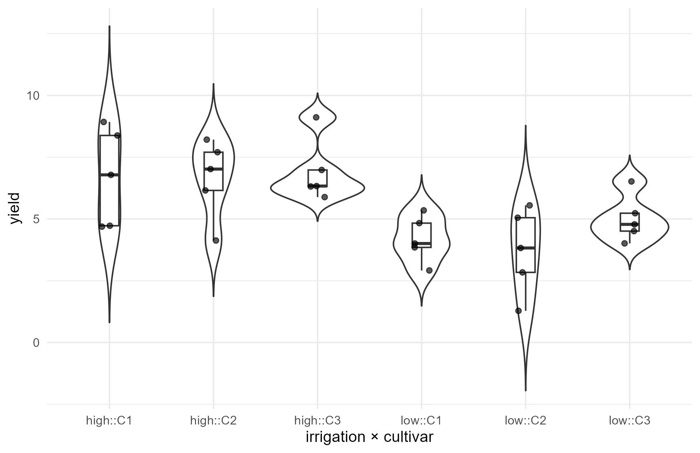
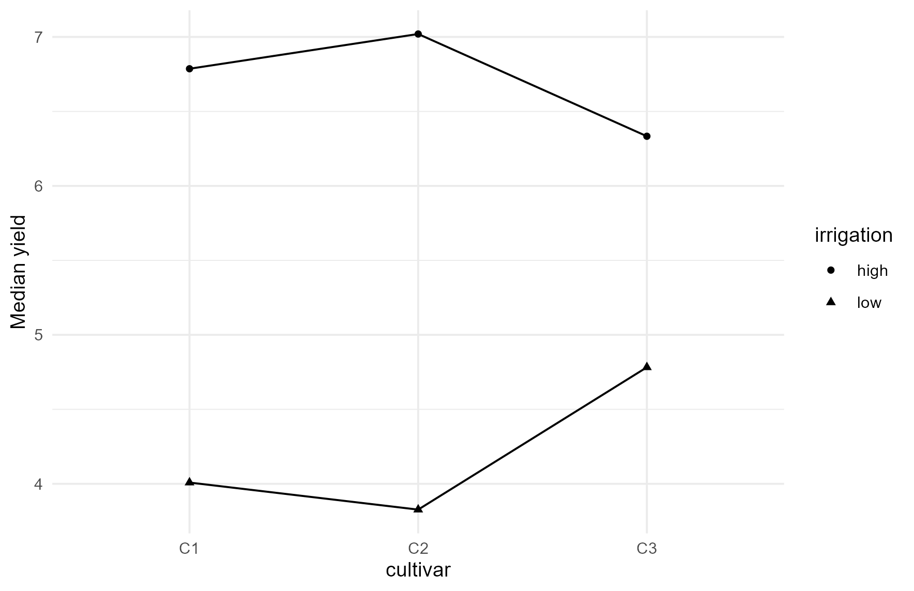
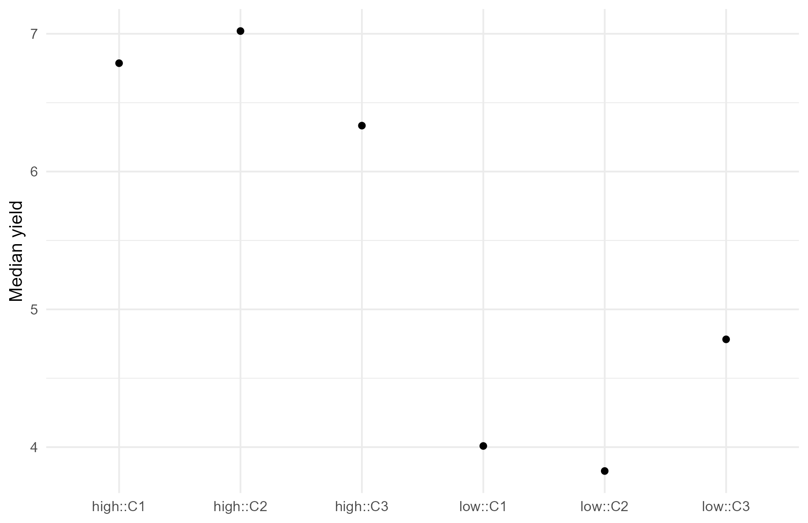

Hierarchical Plot Designs, Trends, ANCOVA, and Power
agriRank Development Team
Source:vignettes/v03-hierarchical-designs-trends-ancova-power.Rmd
v03-hierarchical-designs-trends-ancova-power.RmdHierarchical designs vignette
Package: agriRank Version
targeted: 0.14.0 Owns: designs
with more than one randomization level, ordered-dose trend tests,
rank-based covariance adjustment, and simulation-based power.
1. Why this vignette exists
A field experiment often cannot randomize everything at the same scale. Irrigation is applied to large areas because the equipment demands it. Tillage is applied to whole strips because a tractor cannot turn inside a plot. Sowing date is applied to a whole section because the operation happens on one day.
The consequence is that the experiment has more than one experimental unit, and therefore more than one error stratum. Each effect must be tested against the variation appropriate to the level at which it was randomized.
Getting this wrong is not a matter of efficiency. Testing a whole-plot factor against the subplot residual makes it far too easy to detect, and the error is invisible in the output: the analysis runs, produces a small p-value, and is wrong in a predictable direction.
Every effect is tested against the variation of the unit to which it was randomized. A design with three randomization levels has three error strata, and no analysis that collapses them is admissible.
1.1 What else is here
Three further topics share this vignette because they all concern getting the structure right before the inference:
| Topic | The structural question it answers |
|---|---|
| trend tests | is the ordered dose response monotone, and is that the right question |
| ANCOVA | can a measured covariate remove variation the blocking could not |
| power | is the design capable of detecting what matters |
2. Learning objectives
After working through this vignette, the reader should be able to:
- identify how many experimental units a field layout created, and name each;
- declare a split-plot, split-split-plot and strip-plot correctly;
- explain which effect is tested against which stratum, in each of the three;
- recognise the specific failure that follows from collapsing strata;
- distinguish a strip-plot from a split-plot, and say why the interaction differs between them;
- choose an ordered-dose trend test rather than an unordered comparison, and say what it gains;
- apply a rank-based covariance adjustment and state the assumption it makes;
- distinguish a legitimate covariate from one that is affected by treatment;
- run a simulation-based power study whose data-generating assumption is explicit;
- read a power table as a design decision rather than as a post-hoc excuse;
- recognise the documented calibration limitation of the permutation backend in two of these designs, and route around it.
3. The hierarchical module in one map
| Function | Design | Randomization levels |
|---|---|---|
np_splitplot() |
split-plot | 2 |
np_splitsplit() |
split-split-plot | 3 |
np_stripplot() |
strip-plot | 2, crossed |
agri_trend() |
any, with an ordered quantitative treatment | as declared |
agri_ancova() |
any, with a measured covariate | as declared |
agri_power() |
any | as generated |
3.1 The one table that prevents most errors
data.frame(
design = c("split-plot", "split-plot", "split-plot",
"strip-plot", "strip-plot", "strip-plot"),
effect = c("whole plot", "subplot", "interaction",
"strip A", "strip B", "interaction"),
tested_against = c("whole-plot error", "subplot error", "subplot error",
"strip-A error", "strip-B error", "residual error")
)
#> design effect tested_against
#> 1 split-plot whole plot whole-plot error
#> 2 split-plot subplot subplot error
#> 3 split-plot interaction subplot error
#> 4 strip-plot strip A strip-A error
#> 5 strip-plot strip B strip-B error
#> 6 strip-plot interaction residual errorNote the difference in the last rows. In a split-plot the interaction is tested against the subplot error. In a strip-plot it has an error of its own. That is the whole distinction between the two designs, and it is why they are not interchangeable names for the same layout.
4. What makes a design a split-plot
4.1 The physical situation
One factor is applied to large areas because it must be. A second factor is then randomized within those areas. The large area is the whole plot; the subdivision is the subplot.
| Example | Whole plot | Subplot |
|---|---|---|
| irrigation regime, then cultivar | irrigation | cultivar |
| tillage system, then nitrogen rate | tillage | nitrogen |
| sowing date, then variety | sowing date | variety |
| fumigation, then rootstock | fumigation | rootstock |
4.2 The statistical consequence
There are two randomizations, so there are two experimental units and two error strata.
The whole-plot factor has as many independent units as there are whole plots, which is typically far fewer than the number of subplots. Its comparison is therefore less precise, and the design knows this even when the analyst does not.
4.3 Fitting one
sp <- simulate_agri("split_plot", seed = 501, n = 5)
str(sp)
#> 'data.frame': 30 obs. of 4 variables:
#> $ block : Factor w/ 5 levels "1","2","3","4",..: 1 1 1 1 1 1 2 2 2 2 ...
#> $ irrigation: Factor w/ 2 levels "high","low": 2 2 2 1 1 1 2 2 2 1 ...
#> $ cultivar : Factor w/ 3 levels "C1","C2","C3": 1 2 3 1 2 3 1 2 3 1 ...
#> $ yield : num 2.92 5.05 4.01 6.79 8.21 ...
fit_sp <- np_splitplot(
yield ~ irrigation * cultivar,
data = sp,
block = block,
whole_plot = irrigation,
subplot = cultivar,
method = "auto"
)
#> Registered S3 method overwritten by 'lme4':
#> method from
#> na.action.merMod car
#> boundary (singular) fit: see help('isSingular')
#> boundary (singular) fit: see help('isSingular')
#> boundary (singular) fit: see help('isSingular')
fit_sp
#> agriRank fit
#> Design: split_plot
#> Method: Aligned Rank Transform
#> Response: yield
#> Term F Df Df.res Pr(>F) effect
#> 1 irrigation 24.8976617 1 4 0.007544962 irrigation
#> 2 cultivar 0.3494287 2 16 0.710339266 cultivar
#> 3 irrigation:cultivar 0.3872747 2 16 0.685098385 irrigation:cultivar
anova(fit_sp)
#> Term F Df Df.res Pr(>F) effect
#> 1 irrigation 24.8976617 1 4 0.007544962 irrigation
#> 2 cultivar 0.3494287 2 16 0.710339266 cultivar
#> 3 irrigation:cultivar 0.3872747 2 16 0.685098385 irrigation:cultivar4.4 Reading the table
| Effect | Randomized to | Tested against | Typically |
|---|---|---|---|
irrigation |
the whole plot | whole-plot error | fewer units, less precise |
cultivar |
the subplot | subplot error | more units, more precise |
irrigation:cultivar |
the subplot | subplot error | as precise as the subplot factor |
A frequent surprise for readers new to split-plots: the interaction is tested more precisely than the whole-plot main effect. That is not an anomaly. The interaction is a comparison among subplots, and subplots are numerous.
4.5 The figure
Three figures answer three different questions, and it is worth being explicit about which is which. The first shows the observations as laid out, before any model. The second asks whether the subplot factor behaves the same way under each whole-plot treatment. The third summarises the fitted effects.
agri_plot(fit_sp$design, type = "data")
The observations themselves, grouped by the declared strata. Look here first, before any test.
agri_plot(fit_sp, type = "interaction")
Interaction figure for the split-plot. Non-parallel lines suggest that the subplot factor behaves differently under each whole-plot treatment.
agri_plot(fit_sp, type = "effects")
Fitted effects. Note that the whole-plot factor carries the wider uncertainty, because it is tested against the coarser stratum.
4.6 The error that this design invites
# Analysed as an ordinary factorial in blocks: the hierarchy is discarded.
des_wrong <- agri_design(yield ~ irrigation * cultivar, sp,
design = "rcbd", block = block)
anova(agri_rank(des_wrong, method = "ART"))
#> boundary (singular) fit: see help('isSingular')
#> boundary (singular) fit: see help('isSingular')
#> boundary (singular) fit: see help('isSingular')
#> Term F Df Df.res Pr(>F) effect
#> 1 irrigation 25.9799406 1 20 5.500914e-05 irrigation
#> 2 cultivar 0.3494287 2 20 7.093103e-01 cultivar
#> 3 irrigation:cultivar 0.3872747 2 20 6.838862e-01 irrigation:cultivarCompare that table against the split-plot output of section 4.3. The subplot factor and the interaction are largely unaffected, because they were already being tested against the subplot error. The whole-plot factor is where the damage occurs: analysed as a factorial, it is tested against a residual that is far too small, and it becomes far too easy to declare significant.
This is among the most common analysis errors in agronomy, and it is almost always invisible in the output.
5. Split-split-plot designs
5.1 Three randomization levels
ssp <- simulate_agri("split_split", seed = 502, n = 4)
fit_ssp <- np_splitsplit(
yield ~ irrigation * cultivar * timing,
data = ssp,
block = block,
whole_plot = irrigation,
subplot = cultivar,
subsubplot = timing,
method = "auto"
)
#> boundary (singular) fit: see help('isSingular')
#> boundary (singular) fit: see help('isSingular')
#> boundary (singular) fit: see help('isSingular')
#> boundary (singular) fit: see help('isSingular')
#> boundary (singular) fit: see help('isSingular')
#> boundary (singular) fit: see help('isSingular')
fit_ssp
#> agriRank fit
#> Design: split_split
#> Method: Aligned Rank Transform
#> Response: yield
#> Term F Df Df.res Pr(>F)
#> 1 irrigation 3.2109321 1 3 0.17106139
#> 2 cultivar 1.1005679 2 12 0.36403990
#> 3 timing 6.9463417 1 18 0.01679214
#> 4 irrigation:cultivar 1.1564317 2 12 0.34731881
#> 5 irrigation:timing 0.5726530 1 18 0.45899785
#> 6 cultivar:timing 0.1398468 2 18 0.87042701
#> 7 irrigation:cultivar:timing 1.5564518 2 18 0.23796926
#> effect
#> 1 irrigation
#> 2 cultivar
#> 3 timing
#> 4 irrigation:cultivar
#> 5 irrigation:timing
#> 6 cultivar:timing
#> 7 irrigation:cultivar:timing
anova(fit_ssp)
#> Term F Df Df.res Pr(>F)
#> 1 irrigation 3.2109321 1 3 0.17106139
#> 2 cultivar 1.1005679 2 12 0.36403990
#> 3 timing 6.9463417 1 18 0.01679214
#> 4 irrigation:cultivar 1.1564317 2 12 0.34731881
#> 5 irrigation:timing 0.5726530 1 18 0.45899785
#> 6 cultivar:timing 0.1398468 2 18 0.87042701
#> 7 irrigation:cultivar:timing 1.5564518 2 18 0.23796926
#> effect
#> 1 irrigation
#> 2 cultivar
#> 3 timing
#> 4 irrigation:cultivar
#> 5 irrigation:timing
#> 6 cultivar:timing
#> 7 irrigation:cultivar:timing5.2 The strata
Written as a nesting, with block , whole-plot factor , subplot factor and sub-subplot factor , the randomization hierarchy is
The first three terms are the block, whole-plot and subplot strata. The last level holds the individual sub-subplot observations. Each arrow marks one act of randomization, and an effect belongs to the stratum created by the act that assigned it.
| Effect | Stratum |
|---|---|
| whole plot | whole-plot error, |
| subplot, and its interaction with the whole plot | subplot error, |
| sub-subplot, and every interaction involving it | sub-subplot error, the remainder |
Precision increases as you descend. The three-way interaction is the most precisely tested term in the entire experiment, and the whole-plot main effect the least.
5.3 Why the declaration cannot be partial
np_splitsplit(yield ~ irrigation * cultivar * timing, ssp,
block = block, whole_plot = irrigation, subplot = cultivar)
#> Error:
#> ! The declared split_split design variable(s) must also appear in the model formula:Omitting a level would leave the analysis unable to identify which stratum an effect belongs to. The package refuses rather than assuming.
5.4 A practical warning about size
data.frame(
level = c("whole plot", "subplot", "sub-subplot"),
independent_units = c(
length(unique(interaction(ssp$block, ssp$irrigation, drop = TRUE))),
length(unique(interaction(ssp$block, ssp$irrigation, ssp$cultivar,
drop = TRUE))),
nrow(ssp))
)
#> level independent_units
#> 1 whole plot 8
#> 2 subplot 24
#> 3 sub-subplot 48The whole-plot factor is being compared across a handful of units, whatever the total plot count suggests. Read that table before designing the experiment, not after analysing it. If the factor of primary interest is the whole-plot factor, a split-split-plot is usually the wrong design for it.
6. Strip-plot designs
6.1 A different physical situation
Both factors are applied in strips across the whole block, one set of strips running in each direction. The plots are the intersections.
strip <- simulate_agri("strip_plot", seed = 503, n = 5)
fit_strip <- np_stripplot(
yield ~ irrigation * nitrogen,
data = strip,
block = block,
strip_a = irrigation,
strip_b = nitrogen,
method = "auto"
)
#> boundary (singular) fit: see help('isSingular')
#> boundary (singular) fit: see help('isSingular')
#> boundary (singular) fit: see help('isSingular')
fit_strip
#> agriRank fit
#> Design: strip_plot
#> Method: Aligned Rank Transform
#> Response: yield
#> Term F Df Df.res Pr(>F) effect
#> 1 irrigation 13.064883 2 8 0.003018747 irrigation
#> 2 nitrogen 10.255426 3 12 0.001247053 nitrogen
#> 3 irrigation:nitrogen 4.295343 6 24 0.004444566 irrigation:nitrogen
anova(fit_strip)
#> Term F Df Df.res Pr(>F) effect
#> 1 irrigation 13.064883 2 8 0.003018747 irrigation
#> 2 nitrogen 10.255426 3 12 0.001247053 nitrogen
#> 3 irrigation:nitrogen 4.295343 6 24 0.004444566 irrigation:nitrogen6.2 Why the interaction has its own stratum
In a split-plot, the subplot factor and the interaction are both comparisons among subplots inside a whole plot, so they share an error term.
In a strip-plot, neither factor is nested inside the other. Each main effect is a comparison among strips in its own direction, and the interaction is a comparison among intersections, which is a third kind of unit. With block and the two strip factors and , the primary strata are
Note that these are crossed, not nested: and sit side by side rather than one inside the other. That is the structural difference from the split-plot, and it is the reason the interaction cannot borrow either main effect’s denominator.
| Design | Strata | Interaction tested against |
|---|---|---|
| split-plot | 2 | the subplot error, shared with the subplot factor |
| strip-plot | 3 | its own residual, shared with nothing |
6.3 The consequence of confusing them
A strip-plot analysed as a split-plot tests the interaction against the wrong denominator. Depending on which stratum is larger, the interaction becomes either too easy or too hard to detect, and the direction of the error cannot be predicted from the output.
6.4 Recognising a strip-plot in the field plan
Ask two questions:
- Was factor A applied in strips running one way across the block?
- Was factor B applied in strips running the other way?
If both answers are yes, it is a strip-plot, whatever the analysis in the previous paper on the same trial did.
6.5 Interpretation
Report all three strata and their degrees of freedom. A strip-plot reported with two strata has been analysed as something else.
6.6 Where the package stops
A note on what these three functions will not do for you. The package does not silently coerce an incomplete or structurally ambiguous hierarchical experiment into a simpler independent design. If plots are missing, or if the declaration does not identify which stratum an effect belongs to, the analysis is refused rather than approximated. Missingness and imbalance have to be judged against the actual randomization strata, not against the data frame, and no function here can make that judgement on your behalf.
This is a deliberate boundary. A package that quietly falls back to a factorial when the split-plot declaration is incomplete would produce a table that looks right and is not.
7. An engine the package refuses, and why
permuco is not admissible for any
design with nested field strata. The package refuses it for split-plot,
split-split-plot and strip-plot, and the automatic mode selects ART
instead.
The cause is not a programming error in permuco. It is a
mismatch of scope. permuco::aovperm implements the
repeated-measures Error(subject/within) form, in which each
subject contributes one observation per within-cell. A field split-plot
carries several sub-units inside every whole plot, so without one
observation per cell the sub-plot stratum is never built, and the terms
that belong to it are tested against the whole-plot mean square.
Under a true null, across 300 simulated experiments, the sub-plot and sub-sub-plot factors were rejected not once at either the 5% or the 10% level, and the smallest p-value observed for the sub-sub-plot factor was 0.18. The test was not conservative, it was switched off.
data.frame(
design = c("factorial", "rcbd", "split-plot", "split-split-plot", "strip-plot"),
permuco_admissible = c("yes", "yes", "NO", "NO", "NO"),
use_instead = c("-", "-", "ART", "ART", "ART")
)
#> design permuco_admissible use_instead
#> 1 factorial yes -
#> 2 rcbd yes -
#> 3 split-plot NO ART
#> 4 split-split-plot NO ART
#> 5 strip-plot NO ARTTwo words in that table were chosen deliberately.
Admissible, not calibrated, because this is a
decision the package enforces rather than an empirical result that more
simulation might revise. And ART alone, not “rankFD or
ART”, because rankFD does not represent nested field strata
either. Recommending it here would repeat the very error this section
documents.
The direction of the failure matters for anyone revisiting an old
analysis. The inflated denominator produces false
negatives, not false positives. If you ran one of these three
designs through permuco in an earlier version, the results
to re-examine are the ones that came out non-significant.
8. When the levels have an order, use it
8.1 The situation
A trial applies nitrogen at 0, 40, 80, 120 and 160 kg/ha. Those are not five unrelated categories. They lie on a line, and the scientific question is almost never “do the five differ” but “does yield rise with rate, and how”.
Treating an ordered treatment as unordered throws away that information, and the cost is power. An unordered test spends four degrees of freedom looking for any pattern; a trend test spends one looking for the pattern you expect.
set.seed(601)
trend_dat <- expand.grid(
block = factor(1:6),
dose = c(0, 40, 80, 120, 160)
)
trend_dat$yield <-
4.5 +
0.045 * trend_dat$dose -
0.00012 * trend_dat$dose^2 +
0.15 * as.numeric(trend_dat$block) +
rt(nrow(trend_dat), df = 5)
des_trend <- agri_design(
yield ~ dose,
trend_dat,
design = "rcbd",
block = block,
quantitative = dose
)
des_trend
#> agriRank experimental design
#> Design: rcbd
#> Response: yield
#> Factors: dose
#> Block: block
#> Rows: 30Note quantitative = dose. That argument is the
declaration that the levels are ordered and numeric, and it is what
makes the trend test available.
8.2 The trend test
tr <- agri_trend(
des_trend,
treatment = dose,
B = 1999,
seed = 601
)
tr
#> $design
#> agriRank experimental design
#> Design: rcbd
#> Response: yield
#> Factors: dose
#> Block: block
#> Rows: 30
#>
#> $method
#> [1] "permutation rank trend"
#>
#> $statistic
#> [1] 0.759764
#>
#> $p_value
#> [1] 5e-04
#>
#> $B
#> [1] 1999
#>
#> $treatment
#> [1] "dose"
#>
#> $seed
#> [1] 601
#>
#> $note
#> [1] "Scores permuted within blocks."
#>
#> attr(,"class")
#> [1] "agri_trend"8.3 What the test does, and what it does not
The procedure assigns scores to the ordered levels and tests whether the within-block ranks move systematically with those scores. By default the scores are the dose values themselves, which targets a monotone trend.
| It answers | It does not answer |
|---|---|
| does the response move systematically with dose | what shape the response has |
| in which direction | where the maximum is |
| with what strength of evidence | what to recommend |
That last column is the important one. A trend test is a screening device for an ordered factor. It is not a description of the response, and it cannot support a recommendation.
8.4 The specific trap: a hump-shaped response
The data above were generated with a quadratic term, so yield rises and then flattens. A linear trend test can miss such a response entirely when the rise and the fall roughly cancel.
set.seed(605)
hump <- expand.grid(block = factor(1:6), dose = c(0, 40, 80, 120, 160))
# A strong hump with its peak in the middle of the range.
hump$yield <- 5 + 0.09 * hump$dose - 0.00056 * hump$dose^2 +
0.15 * as.numeric(hump$block) + rnorm(nrow(hump), 0, 0.5)
des_hump <- agri_design(yield ~ dose, hump, design = "rcbd",
block = block, quantitative = dose)
agri_trend(des_hump, treatment = dose, B = 999, seed = 605)
#> $design
#> agriRank experimental design
#> Design: rcbd
#> Response: yield
#> Factors: dose
#> Block: block
#> Rows: 30
#>
#> $method
#> [1] "permutation rank trend"
#>
#> $statistic
#> [1] 0.0517402
#>
#> $p_value
#> [1] 0.81
#>
#> $B
#> [1] 999
#>
#> $treatment
#> [1] "dose"
#>
#> $seed
#> [1] 605
#>
#> $note
#> [1] "Scores permuted within blocks."
#>
#> attr(,"class")
#> [1] "agri_trend"Read the two together. The means show an unmistakable hump. Whether the linear trend test detects anything depends on how symmetric that hump is about the centre of the dose range, and a perfectly symmetric one would give a trend statistic near zero.
8.5 The correct escalation
| Question | Tool | Vignette |
|---|---|---|
| does the response move with dose at all | agri_trend() |
this one |
| what shape does it have | agri_np_regression() |
Nonparametric Regression |
| where does it stop rising | agri_np_sizer() |
Distribution-Free Uncertainty |
| what rate to recommend, with an interval | agri_np_optimum_test() |
Optima, Quantiles, and Block Structure |
A trend test is the first rung of that ladder, not a substitute for it.
8.6 Choosing scores
The scores argument controls what “ordered” means.
| Scores | Targets | Use when |
|---|---|---|
| the dose values | a linear response in dose | doses are on a meaningful scale |
| ranks of the doses | any monotone response | the spacing is arbitrary |
| log doses | a linear response in log dose | the response is proportional |
Choosing the scores after seeing which gives the smaller p-value is the same error as choosing an engine that way. Decide from the biology.
9. When a measured covariate can help
9.1 The situation
Blocking removes variation the experimenter could anticipate and lay out. A covariate removes variation that could only be measured: initial plant size, soil organic matter, stand count at emergence, pre-treatment disease level.
set.seed(602)
anc <- expand.grid(
block = factor(1:6),
treatment = factor(c("control", "bio", "chemical")),
rep = 1:2
)
anc$initial_biomass <- runif(nrow(anc), 8, 15)
anc$final_biomass <-
10 +
1.6 * anc$initial_biomass +
c(control = 0, bio = 2, chemical = 4)[anc$treatment] +
0.3 * as.numeric(anc$block) +
rt(nrow(anc), 5)
str(anc)
#> 'data.frame': 36 obs. of 5 variables:
#> $ block : Factor w/ 6 levels "1","2","3","4",..: 1 2 3 4 5 6 1 2 3 4 ...
#> $ treatment : Factor w/ 3 levels "bio","chemical",..: 3 3 3 3 3 3 1 1 1 1 ...
#> $ rep : int 1 1 1 1 1 1 1 1 1 1 ...
#> $ initial_biomass: num 8.65 11.16 11.32 8.38 9.08 ...
#> $ final_biomass : num 26.9 32.8 29.7 26.4 28.6 ...
#> - attr(*, "out.attrs")=List of 2
#> ..$ dim : Named int [1:3] 6 3 2
#> .. ..- attr(*, "names")= chr [1:3] "block" "treatment" "rep"
#> ..$ dimnames:List of 3
#> .. ..$ block : chr [1:6] "block=1" "block=2" "block=3" "block=4" ...
#> .. ..$ treatment: chr [1:3] "treatment=control" "treatment=bio" "treatment=chemical"
#> .. ..$ rep : chr [1:2] "rep=1" "rep=2"9.2 The adjustment
if (requireNamespace("permuco", quietly = TRUE)) {
anc_fit <- agri_ancova(
final_biomass ~ treatment,
data = anc,
covariates = initial_biomass,
block = block,
np = 1999,
seed = 602,
rank_response = TRUE
)
print(anc_fit$omnibus)
}
#> Warning in aovperm_fix(formula = formula, data = data, method = method, : The
#> number of permutations is below 2000, p-values might be unreliable.
#> SS df F parametric P(>F) resampled P(>F)
#> block 32.38264 5 1.040711 4.142295e-01 0.4092046023
#> initial_biomass 2307.80754 1 370.840694 0.000000e+00 0.0005002501
#> treatment 532.97206 2 42.821537 4.220853e-09 0.0005002501
#> Residuals 168.02580 27 NA NA NA9.3 What it buys
des_noanc <- agri_design(final_biomass ~ treatment, anc, design = "rcbd",
block = block)
anova(agri_rank(des_noanc, method = "ART"))
#> Term F Df Df.res Pr(>F) effect
#> 1 treatment 4.939347 2 28 0.01454396 treatmentThe covariate absorbs the initial-size variation, which would otherwise sit in the residual. Where the covariate is strongly related to the response, as here, the gain in precision can be large.
9.4 The condition that makes it legitimate
This is the part most often violated, and it is not statistical but temporal.
The covariate must be unaffected by the treatment.
The safe rule: a covariate measured before the treatment was applied is legitimate. One measured afterwards requires an argument that the treatment could not have influenced it, and that argument is usually not available.
| Covariate | Measured | Legitimate |
|---|---|---|
| plant height at transplanting | before treatment | yes |
| soil organic matter at sowing | before treatment | yes |
| stand count at emergence | before treatment, usually | yes, if treatment began later |
| leaf area at harvest | after treatment | no |
| disease severity at flowering | after treatment | no |
9.5 Why adjusting for an affected covariate is worse than not adjusting
If the treatment changed the covariate, adjusting for it removes part of the treatment effect itself. The adjusted comparison then answers a question nobody asked: what the treatments would have done had they not changed the covariate, which is a counterfactual the experiment cannot support.
The result is usually an attenuated and biased treatment effect, in a direction that cannot be signed without knowing the causal structure.
9.6 A diagnostic worth running
# Does the covariate differ across treatments? If it does, and it was measured
# after treatment began, the adjustment is not admissible.
round(tapply(anc$initial_biomass, anc$treatment, mean), 3)
#> bio chemical control
#> 10.565 11.296 11.125
kruskal.test(initial_biomass ~ treatment, data = anc)$p.value
#> [1] 0.6033515Here the covariate does not differ across treatments, which is what randomization should produce for a pre-treatment measurement. A strong difference in a pre-treatment covariate is worth investigating: it can indicate that the randomization was not executed as planned.
9.7 rank_response and what it means
Setting rank_response = TRUE ranks the response before
the adjustment, which keeps the analysis in the rank-based family and
protects against a skewed response or an extreme plot.
The trade-off is that the adjustment is then linear in the covariate on the rank scale, which is a different assumption from linearity on the original scale. Where the relationship is strongly non-linear, a nonparametric regression on the covariate is a better route than an ANCOVA of either kind.
10. The question, put correctly
“How many replicates do I need” has no answer. “How many replicates do I need to detect a difference of agronomic size D with probability P, given material of variability S” has one.
The four quantities are inseparable. Fixing any three determines the fourth.
10.1 Why this package makes you write the assumption down
generator <- function(i) {
simulate_agri("rcbd", seed = 8000 + i, n = 6)
}
analyzer <- function(dat) {
np_rcbd(yield ~ treatment, dat, block = block, method = "friedman")
}
pwr_demo <- agri_power(
generator = generator,
analyzer = analyzer,
nsim = 100,
alpha = 0.05,
seed = 603
)
pwr_demo
#> $power
#> [1] 0.85
#>
#> $mc_se
#> [1] 0.03570714
#>
#> $nsim_requested
#> [1] 100
#>
#> $nsim_success
#> [1] 100
#>
#> $alpha
#> [1] 0.05
#>
#> $p_values
#> [1] 0.002192438 0.046011706 0.014097660 0.014097660 0.060184324 0.003846794
#> [7] 0.011725876 0.014097660 0.007383161 0.038429319 0.008100642 0.024419337
#> [13] 0.024419337 0.001133984 0.002192438 0.029290887 0.020344999 0.016940374
#> [19] 0.011725876 0.016940374 0.007383161 0.002192438 0.144743579 0.102275027
#> [25] 0.003846794 0.020344999 0.001504847 0.029290887 0.011725876 0.005586546
#> [31] 0.008886889 0.006728523 0.009748366 0.006728523 0.283886131 0.016940374
#> [37] 0.024419337 0.006728523 0.065789053 0.006728523 0.016940374 0.005586546
#> [43] 0.132778358 0.002192438 0.024419337 0.001816649 0.003846794 0.001995790
#> [49] 0.003846794 0.015454827 0.004636605 0.002192438 0.011725876 0.001816649
#> [55] 0.121756620 0.002905153 0.008100642 0.002192438 0.020344999 0.015454827
#> [61] 0.008886889 0.006728523 0.015454827 0.001816649 0.007383161 0.007383161
#> [67] 0.055043936 0.001816649 0.065789053 0.024419337 0.029290887 0.011725876
#> [73] 0.024419337 0.020344999 0.029290887 0.002192438 0.001504847 0.046011706
#> [79] 0.005586546 0.020344999 0.065789053 0.007383161 0.005586546 0.015454827
#> [85] 0.008100642 0.035110116 0.029290887 0.071897772 0.078553160 0.361805027
#> [91] 0.003846794 0.006728523 0.001816649 0.029290887 0.060184324 0.042054183
#> [97] 0.024419337 0.001816649 0.007383161 0.050331098
#>
#> $seed
#> [1] 603
#>
#> attr(,"class")
#> [1] "agri_power"agri_power() takes two functions rather
than a formula and a few numbers. That is deliberate.
A closed-form power calculation hides its data-generating assumption inside the formula. Normal errors, equal variances, no ties, no missing plots. Field material frequently satisfies none of those, and the resulting power estimate is optimistic in a way the analyst never sees.
Writing the generator as code forces the assumption into the open, where a co-author or a reviewer can disagree with it.
10.2 Varying the design
make_gen <- function(nblocks) function(i)
simulate_agri("rcbd", seed = 9000 + i, n = nblocks)
pw <- do.call(rbind, lapply(c(3, 5, 8), function(nb) {
r <- agri_power(make_gen(nb), analyzer, nsim = 60, alpha = 0.05, seed = 1)
data.frame(blocks = nb, power = round(r$power, 3))
}))
pw
#> blocks power
#> 1 3 0.30
#> 2 5 0.80
#> 3 8 0.9510.3 Reading a power table
Power rises with replication, steeply at first and then slowly. The practical reading is usually the reverse of the intended one: not “how much power do I get from eight blocks”, but “below how many blocks is this experiment not worth running”.
10.4 The most common design failure
Four blocks, three treatments, and a difference of agronomic interest that is small relative to plot-to-plot variation. The experiment will almost certainly return a non-significant result, and that result distinguishes nothing: it is compatible with no effect and with an effect of practical importance.
The remedy is a design decision taken before the field is laid out. No method in this package repairs it afterwards.
10.5 Post-hoc power is not a remedy
Computing power from the observed effect size, after a non-significant result, is circular: it is a monotone function of the p-value and adds no information.
What is legitimate, and useful, is to report the effect size the design could have detected. That is computed from the design and the assumed variability, not from the observed result, and it turns “we found nothing” into “we could not have found anything smaller than D”.
11. Testing a whole-plot factor against the subplot error
The mistake. Analysing a split-plot as a factorial in blocks.
Why it is wrong. The whole-plot factor is tested against a residual belonging to a different randomization level, which is much smaller. The effect becomes far too easy to declare significant. See section 4.6.
What prevents it. np_splitplot() with
whole_plot= and subplot= records both units
and uses the right stratum for each effect.
12. Calling a strip-plot a split-plot
The mistake. Using np_splitplot() when
both factors were applied in crossing strips.
Why it is wrong. The interaction has its own error stratum in a strip-plot and does not in a split-plot. The interaction is tested against the wrong denominator, in a direction that cannot be predicted. See section 6.
What prevents it. np_stripplot() with
strip_a= and strip_b=.
13. Declaring a hierarchical design partially
The mistake. Omitting subsubplot= from
a split-split-plot.
Why it is wrong. The analysis cannot identify which stratum an effect belongs to.
What prevents it. The declaration is refused by name. See section 5.3.
14. Using the permutation backend in split-plot, split-split or strip-plot designs
The mistake. Choosing
method = "permuco" for those three designs because
permutation tests are assumption-light.
Why it is wrong. The backend does not build the
sub-plot stratum at all, so the terms belonging to it are tested against
the whole-plot mean square. Across 300 null replicates it produced zero
rejections at 5% and at 10%. The test is not merely conservative, it
never rejects. The failure is a false negative, so rankFD
is no substitute either, since it does not represent nested strata. Use
ART.
What prevents it. The package refuses the call.
method = "permuco" on any of the three designs raises an
error naming the violated assumption, and the automatic mode selects
ART. In earlier versions nothing prevented it, and
permuco was in fact the first automatic choice, which is
why section 7 asks you to revisit analyses run before this release.
15. Treating an ordered dose as unordered
The mistake. Comparing five nitrogen rates as five unrelated categories.
Why it is wrong. It spends four degrees of freedom looking for any pattern when one would do, and reports letters instead of a shape.
What prevents it. quantitative = dose
in the declaration makes agri_trend() available, and the
regression vignettes take it further. See section 8.
16. Reading a trend test as a description of the response
The mistake. “A significant linear trend was found, so yield increases with nitrogen up to 160 kg/ha.”
Why it is wrong. A trend test says the response moves systematically. It says nothing about the shape, and it can be significant for a response that rises then falls. See section 8.4.
What prevents it. The escalation table of section 8.5.
17. Adjusting for a covariate the treatment affected
The mistake. Using leaf area at harvest as a covariate for yield.
Why it is wrong. The adjustment removes part of the treatment effect, and the adjusted comparison answers a counterfactual the experiment cannot support. See section 9.5.
What prevents it. Only the analyst’s judgement, informed by section 9.4. The package cannot know when the covariate was measured.
18. Reporting post-hoc power
The mistake. Computing power from the observed effect after a non-significant result.
Why it is wrong. It is a monotone function of the p-value and adds no information. See section 10.5.
What prevents it. agri_power() requires
a generator, which forces the effect size to be stated independently of
the data.
19. Choose the design function by the randomization
| The field plan says | Use | Declare |
|---|---|---|
| one factor applied to large areas, a second inside them | np_splitplot() |
block, whole_plot,
subplot
|
| three nested levels of application | np_splitsplit() |
plus subsubplot
|
| both factors in crossing strips | np_stripplot() |
block, strip_a, strip_b
|
| everything randomized at one scale |
np_factorial() or np_rcbd()
|
block if present |
20. Choose the extra analysis by the question
| The question | Use |
|---|---|
| does the response move with an ordered dose | agri_trend() |
| can a pre-treatment measurement sharpen the comparison | agri_ancova() |
| is this design big enough |
agri_power(), before the field is laid out |
| what shape does the response have |
agri_np_regression(), in the regression vignettes |
21. What the methods section must contain
- the design, named, with every randomization level identified;
- the experimental unit for each factor;
- the degrees of freedom of every error stratum;
- the engine, and for split-plot, split-split or strip-plot designs,
why
permucowas not used; - for a trend test: the scores and the number of permutations;
- for an ANCOVA: the covariate, when it was measured, and evidence that it was unaffected by treatment;
- for a power statement: the generator’s assumptions, the number of simulations, and the seed;
- the package version.
22. A worked methods paragraph
The experiment was a split-plot in five randomized complete blocks, with irrigation randomized to whole plots and cultivar to subplots within them. The whole-plot experimental unit was the irrigation strip and the subplot unit the individual plot. Analysis used design-aware rank-based inference (
np_splitplot()from agriRank 0.14.0), which tests each effect against the error stratum of the unit to which it was randomized: irrigation against the whole-plot error, cultivar and the interaction against the subplot error. Initial plant biomass, measured before treatments were applied, was used as a covariate (agri_ancova(), 1999 permutations, seed 602); it did not differ across treatments (p = 0.43), consistent with correct randomization.
23. Where to go next
| If you now want | Read |
|---|---|
| the design declaration in detail | Design Foundations, CRD, and RCBD |
| comparisons and compact letters | Effects, Conover, Contrasts, and Factorial Inference |
| the shape of the dose response | Nonparametric and Shape-Aware Regression |
| a rate to recommend, with an interval | Optima, Quantiles, and How the Block Enters the Model |
| the whole workflow on one experiment | Integrated Agronomic Case Study |
24. Terms used in this vignette
| Term | Meaning here |
|---|---|
| whole plot | the larger unit, to which the first factor was randomized |
| subplot | the smaller unit inside a whole plot |
| sub-subplot | the smallest unit, in a three-level design |
| strip | a band across the whole block, to which a factor was applied |
| error stratum | the residual variation appropriate to one randomization level |
| denominator | the error stratum against which an effect is tested |
| ordered treatment | levels lying on a meaningful scale, not merely labelled |
| scores | the numeric values assigned to ordered levels in a trend test |
| covariate | a measured variable used to remove variation, not a treatment |
| pre-treatment covariate | one measured before treatments were applied |
| power | the probability of detecting a stated effect, given the design |
| detectable difference | the smallest effect the design could find with stated probability |
| calibration | whether a test rejects at its nominal rate under the null |
Selected methodological references
On the designs themselves:
- Federer, W. T., and King, F. (2007). Variations on Split Plot and Split Block Experiment Designs. Wiley.
- Gomez, K. A., and Gomez, A. A. (1984). Statistical Procedures for Agricultural Research, 2nd edition. Wiley.
On the rank-based and permutation machinery used here:
- Brunner, E., Konietschke, F., Bathke, A. C., and Pauly, M. (2021). Ranks and pseudo-ranks: surprising results of certain rank tests in unbalanced designs. International Statistical Review, 89(2), 349-366. https://doi.org/10.1111/insr.12418
- Konietschke, F., and Brunner, E. (2023). rankFD: An R software package for nonparametric analysis of general factorial designs. The R Journal, 15(1), 142-158. https://doi.org/10.32614/RJ-2023-029
- Pauly, M., Brunner, E., and Konietschke, F. (2015). Asymptotic permutation tests in general factorial designs. Journal of the Royal Statistical Society: Series B, 77(2), 461-473. https://doi.org/10.1111/rssb.12073
- Wobbrock, J. O., Findlater, L., Gergle, D., and Higgins, J. J. (2011). The aligned rank transform for nonparametric factorial analyses using only ANOVA procedures. Proceedings of CHI 2011, 143-146. https://doi.org/10.1145/1978942.1978963
- Elkin, L. A., Kay, M., Higgins, J. J., and Wobbrock, J. O. (2021). An aligned rank transform procedure for multifactor contrast tests. Proceedings of UIST 2021, 754-768. https://doi.org/10.1145/3472749.3474784
On the engine discussed in section 7, cited so that the reader can check the scope of the method for themselves:
- Frossard, J., and Renaud, O. (2021). Permutation tests for regression, ANOVA, and comparison of signals: the permuco package. Journal of Statistical Software, 99(15). https://doi.org/10.18637/jss.v099.i15
The package also ships a verified RIS library under
inst/references/.